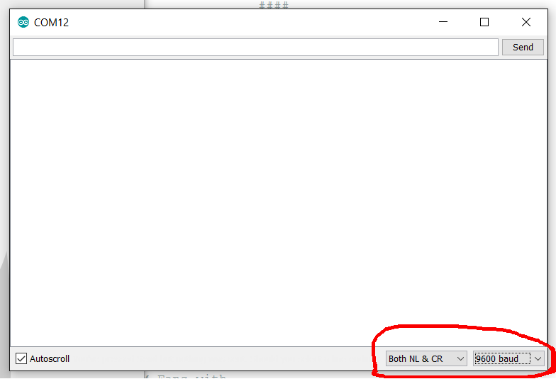
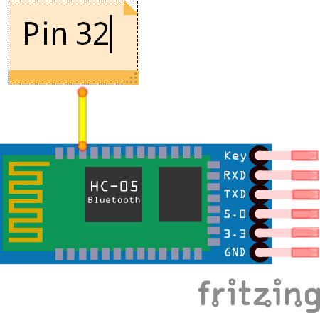
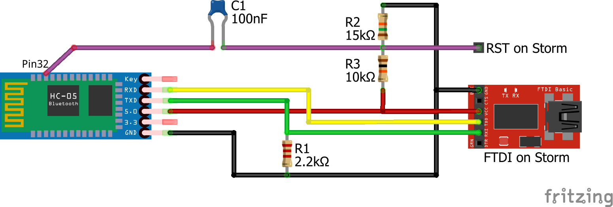

{kind=link}
{kind=link}

A huge shout out to Joshua Newell, the author of the above linked page.
This HowTo requires soldering! If you have no faith in your soldering skills then do not attempt this. I take no responsibility if you fry your components.
I list the Arduino Mega2560 and Uno in the materials list. There is really nothing stopping you from using any other Arduino board to do the setup of the HC-05 module. For boards that have only one hardware UART you need to use the steps outlined for the Uno. For boards that have more than one hardware UART you will use the steps outlined for the Mega2560. Of course, you may need to change which pins you use depending on the board.
I linked a specific HC-05 Bluetooth module in the material list. There are other HC-05 modules out there and they have different pinouts. You could even use a HC-06/HC-10/HC-xx but the 'AT' commands will likely be different. If you have one of those you can still make this work but you will need to research which pins and/or 'AT' commands to use.
We need to configure the HC-05 so it can act as a programming interface. To do this we need to build the setup circuit that allows us to put the module into command mode. Here are three methods depending on which microcontroller you are using.
Note that some HC-05 modules have a '3.3v' pin, the one I have does. You can connect the 'key' pin directly to it or to the '3.3v' pin on the microcontroller, if available. Do not, repeat DO NOT, connect the 3.3v pin on the module to the 3.3v pin on the Arduino AND the 5v pin on the module to the 5v pin on the Arduino at the same time. Not 100% sure what will happen but it can't be good to hook two power supply pins together.
Regarding the 'key' pin: Applying 3.3 volts to this pin puts the HC-05 into command mode. Command mode sets the baud rate to 38400 and allows us to send the 'AT' commands needed to properly configure the HC-05 for our needs (step 4).
Be aware that the only method I have actually tested thus far is method 1. This is because I don't have an Uno and I have not the time right now to figure out which pins to use to do this whole deal with only a Storm(X) on hand (soon).
You may notice that I am using Serial2 (pins 16 and 17) on the Mega2560 instead of Serial1 (pins 18 ans 19). This is because for some reason Serial1 does not work properly, for me at least. Try it if you like... Get it working on Serial2, then move the pins and change the sketch (just replace all '2's with '1's). Bet ya it won't work.
As soon as I have time I will work this out but it will require a FTDI cable to upload the setup sketch in the next step.
The sketch you use depends on the microcontroller you are using to set up the HC-05. Find your microcontroller below and upload the appropriate sketch in the usual way.
//////////////////////////////////////////////////////////////////////
/* Serial Loop */
char inChar;
void setup() {
Serial.begin(9600);
Serial.println("AT");
Serial2.begin(38400);
Serial2.println("AT");
}
void loop() {
while ( Serial2.available() ) {
inChar = Serial2.read();
Serial.print(inChar);
}
while ( Serial.available() ) {
inChar = Serial.read();
Serial.print(inChar); //echo
Serial2.print(inChar);
}
}
//////////////////////////////////////////////////////////////////////
//////////////////////////////////////////////////////////////////////
/* Serial Loop */
#include <SoftwareSerial.h>
#define rxPin 8
#define txPin 7
SoftwareSerial btSerial(rxPin, txPin); //RX, TX
char inChar;
void setup() {
Serial.begin(9600);
Serial.println("AT");
btSerial.begin(38400);
btSerial.println("AT");
}
void loop() {
while ( btSerial.available() ) {
inChar = btSerial.read();
Serial.print(inChar);
}
while ( Serial.available() ) {
inChar = Serial.read();
Serial.print(inChar); //echo
btSerial.print(inChar);
}
}
//////////////////////////////////////////////////////////////////////
Not done yet. Should be the same as for the Uno but possibly with different pins for RX/TX. You will also need a FTDI cable to upload the sketch and send the 'AT' commands in the next step.
Once the setup sketch is uploaded you are ready to configure the Bluetooth device so it can act as a programming interface.
From the Arduino software, open the serial monitor (Tools->Serial Monitor, or Ctrl-Shift-M, or hit the magnifying glass icon in the upper righthand corner).
In the bottom righthand corner of the serial monitor there are two dropdown boxes. In the first one choose "Both NL & CR". In the second choose "9600".
What these commands do, in order: reset to factory settings, set to slave role, set pin 32 low, set baud rate to programming rate, initialize.
You should receive an "OK" reponse after each command is entered.
Disconnect the '3.3v' pin from the 'key' pin and cycle power to the HC-05. It is now running at a buad rate of 115200 and will be in pairing mode.
Add, and pair, the module to your PC. Make sure to use the 'pairing code' option if available. When it asks for the pairing code enter "1234".
This next bit is extremely important but it is left out of every 'howto' I have seen concerning this. Once the module is paired to your PC the OS will create TWO new COM ports. You need to configure these ports to communicate at the proper baud rate.
In Windows, open the "Device Manager" and expand "Ports(COM&LPT)". They will probably be named something like "Standard Serial over Bluetooth link (COMXX)". Double-click each one and change the "Bits per second" (in the "Port Settings" tab) to 115200.
If you are using Linux you should already know where to change these settings for your distro.
We are now done with the setup circuit. Disassemble it.
Solder a jumper wire directly to the HC-05's pin 32.
Find the reset pin/pad on your Storm(X). On my Storm there is access to this pad from the bottom of the board. It sits in a group of six pads labeled "ISP". The reset pad itself is labeled "RST". Solder a jumper wire to this pad.

Solder pins to the FTDI header of your Storm(X).

Two things of note about the following image: First, you will see I used a basic FTDI board to represent the FTDI header on the Storm(X). The header is the same, just follow the connections. Second, if you are like me, you have many parts lying around but may not have a 15kOhm resistor. Not to fear, you can simply wire a 10kOhm and a 4.7kOhm (both common resistors) in series to get ~15kOhm.
With the programmer circuit connected, plug your Storm(X) into power.
If the Arduino software is running then close and restart it.
Now just upload as normal.
Try again.
Hope you had fun!
-Chris